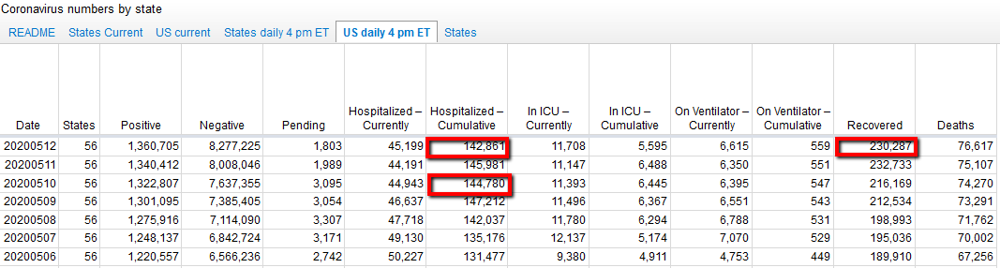

Data Quality issue - headings incorrect on US daily 4pm ET tab
Issue number 417
ggrowe opened this issue on May 13, 2020 at 4:01 pm
From an external source submitted to the Support Desk: The dataset https://docs.google.com/spreadsheets/u/2/d/e/2PACX-1vRwAqp96T9sYYq2-i7Tj0pvTf6XVHjDSMIKBdZHXiCGGdNC0ypEU9NbngS8mxea55JuCFuua1MUeOj5/pubhtml#  the headings for “in ICU currently” and “In ICU Cumulative” and ditto the “On Ventilator” headings seem to be the wrong way around (they need to be swapped)
Sincerely, GG from the Support Desk
Comments
ggrowe commented on May 14, 2020 at 1:19 pm
Thank you!!! Appreciate your attention to this and responding! I sent your detailed response to the external user.
The headings are not reversed. There is sparse data provided about cumulative hospitalizations, and we cannot reliably calculate it in states that only report current statistics. See the disclaimer on our data page